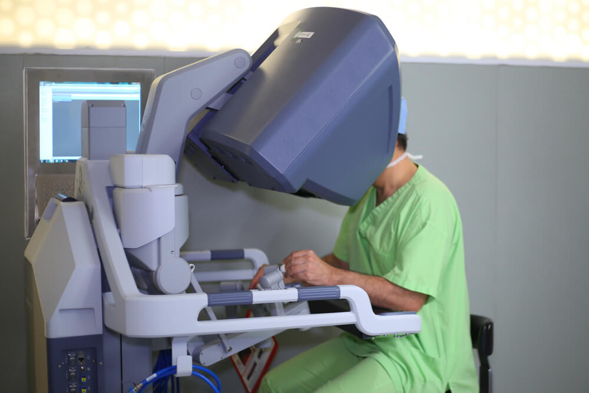

Robótica na Medicina
|

|
Médico MIOTEC
Trabalhando desde 2003 com a medicina da
MIOTEC - curso de biomecanica
|
Sobre a influência da robótica:
- A redução dos riscos de infecções, sangramentos e sequelas (como as cicatrizes marcantes);
- A mais rápida recuperação do paciente;
- Um período menor de internação;
- A melhor qualidade da imagem, com microcâmeras e a visão em 3D;
- Uma melhor ergonomia para o cirurgião, já que movimentos mais difíceis podem ser efetivados de forma simples pelas máquinas;
Aplicação da telemedicina
Os robôs conseguem realizar não apenas cirurgias presenciais, mas também de forma remota, em lugares que não tenham um médico cirurgião especializado naquele procedimento.
As cirurgias remotas, ou telecirurgias, são viabilizadas com o médico especializado trabalhando a distância (operando a máquina), enquanto o médico local acompanha o processo presencialmente, intervindo caso seja necessário.
Além disso, a telemedicina permite o atendimento remoto de outras formas: a emissão de exames, a marcação de consultas, o contato realizado com o paciente e outros processos.
Uso de inteligência artificial
Simulando algumas atividades humanas, a inteligência artificial é conectada a dispositivos, para desempenharem processos de diagnóstico, estatísticas e resolução de problemas. Armazenando um banco de dados de pacientes reais, ela cruza resultados, fazendo cálculos que apontam informações com precisão.
A IA é utilizada para transmitir exames via telemedicina e também para fazer triagens e análises antes de atendimentos. Tais ferramentas podem ser usadas em tratamentos contra o câncer, por exemplo, e melhorar o atendimento nos centros médicos de pronto atendimento.
Realização de cirurgias menos invasivas
Certamente, um dos tópicos mais interessantes do uso da robótica na medicina se dá pelo seu uso cirúrgico. Gerando robôs que trabalham com bastante precisão e menor invasão, a tecnologia colabora para um procedimento de maior segurança.
Os robôs acessam áreas de modo mais controlado, enviando informações o tempo inteiro para o médico cirurgião. Sendo menos agressiva para o corpo, a robótica auxilia na recuperação e no sucesso dos procedimentos.
| Fone: |
(47) 3028-8374 |
| Email: |
reddysquad@gmail.com |
| Local: |
Rua Visconde de Taunay, 427 |